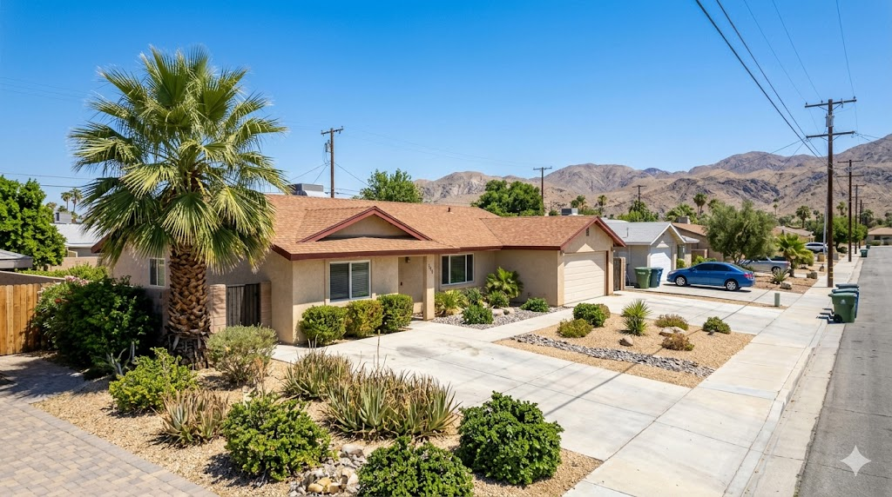

Cathedral City sits at the geographic heart of the Coachella Valley between Palm Springs and Rancho Mirage, offering convenient access to the entire valley. The city has undergone significant revitalization in recent years, with a growing downtown district, new commercial development, and improving infrastructure. Its central location and relatively affordable housing make it attractive to a wide range of buyers.
Cathedral City's real estate market features a mix of mid-century homes, newer developments, and mountain-view properties in the Cove area. Date Palm Drive serves as the main commercial corridor, and neighborhoods closer to the Palm Springs border tend to command higher values. Cathedral City offers some of the best value in the central valley, with properties often priced below comparable homes in neighboring Palm Springs or Rancho Mirage.

Cathedral City Downtown, Mary Pickford Theatre, Cathedral City Civic Center, Date Palm Drive corridor, Agua Caliente Casino Cathedral City.
Contact Brian Ward Appraisal to request a certified residential appraisal in Cathedral City. Most reports are delivered within 3–5 business days, with rush service available for time-sensitive deadlines.
Phone: (760) 534-5449
Email: contact@brianward.com
Online: Request an appraisal online
We also provide certified appraisal services in nearby communities: